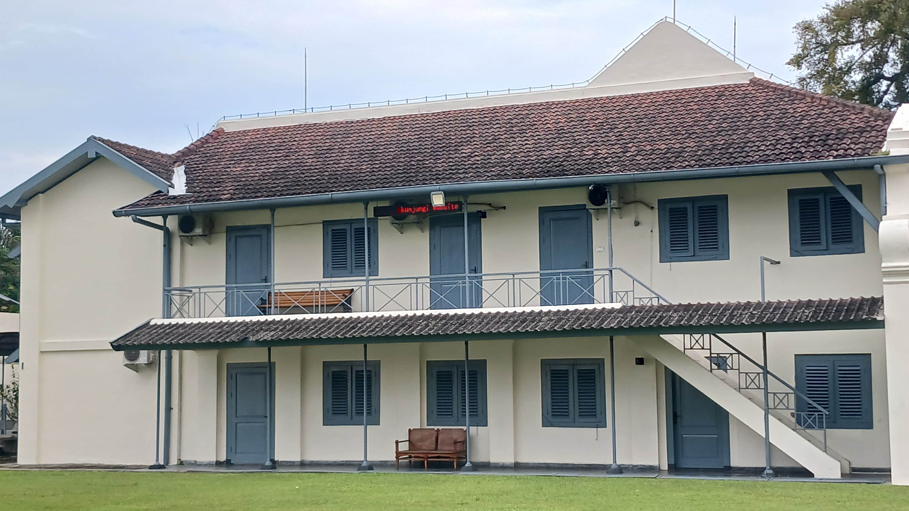

Visualisasi 3D Bangunan Cagar Budaya di Kawasan Titik Nol Kilometer Yogyakarta

Proyek ini menampilkan representasi digital 3D dari bangunan cagar budaya di Titik Nol Kilometer Yogyakarta meliputi bangunan BI Herritage dan Benteng Vredeburg yang bersifat edukatif dan interaktif
Latar Belakang
Indonesia memiliki sejarah panjang yang tercermin dalam banyak bangunan cagar budaya. Salah satu wilayah yang paling mencolok dalam hal ini adalah Daerah Istimewa Yogyakarta, yang memiliki konsentrasi tinggi bangunan bersejarah seperti Keraton Yogyakarta, Benteng Vredeburg, dan lainnya.
Berbagai upaya dokumentasi digital sudah dilakukan, misalnya melalui visualisasi 3D berbasis web (Helmy, 2022), tapi umumnya masih terbatas hanya pada tampilan bentuk geometris dan belum menyentuh aspek informasi mendalam.
Karena itu, penelitian ini berupaya memberi kontribusi dalam pengembangan metode visualisasi warisan budaya yang tidak hanya informatif dan interaktif, tetapi juga menggabungkan model 3D dengan informasi semantik, seperti fungsi ruang, nama bagian bangunan, serta nilai sejarahnya.
Model 3D Bangunan Cagar Budaya
Model 3D ditampilkan dengan tingkat detail (Level of Detail) yang tinggi, mencakup elemen seperti fasad, jendela, dan struktur atap beserta informasi sejarahnya
Lihat Model 3DHubungi Kami
Jika Anda memiliki pertanyaan, kritik, atau saran terkait proyek ini, silakan hubungi kami melalui form berikut